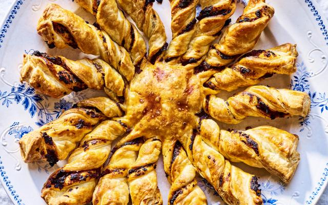

Tarte soleil

Ingrediënten
- 2 rollen bladerdeeg
- 100 g tomatentapenade
- 1 ei
- 10 zwarte olijven zonder pit
- 4 blikjes ansjovissen
Bereiding
-
Verwarm de oven voor op 185°C. Hak de olijven en de ansjovisjes fijn.
Meng ze onder de tomatentapenade. Bestrijk 1 rol bladerdeeg met het
mengsel. Leg de tweede rol bladerdeeg erop en druk de uiteinden goed
aan. Klop het ei los.
-
Zet een glas omgekeerd in het midden van het bladerdeeg. Snij met een
mes van aan het glas 16 gelijke repen van het deeg. Draai elke reep
bladerdeeg enkele keren om zodat je gedraaide stokken krijgt. Haal het
glas eraf en wrijf de zon in met het ei. Bak de tarte soleil 25 à 30
min. in de oven.